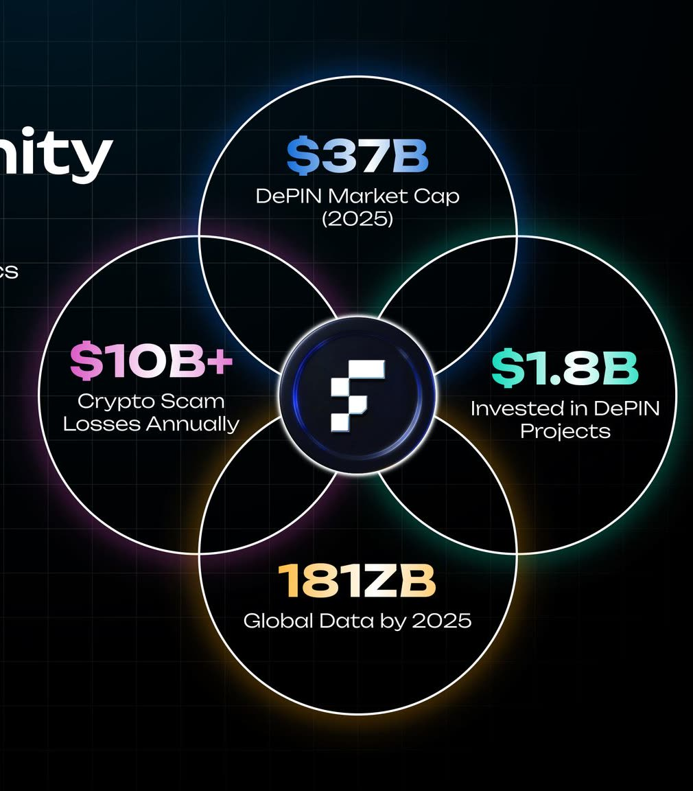

4+ years writing for crypto companies
Web3 content writer for crypto teams
I turn DeFi, tokenomics and on-chain research into articles, pitch decks and whitepapers that retail and institutional readers follow.

Services for crypto teams
Adrian, a Vietnamese Web3 writer, has worked with these teams.
- Articles and long-formLayer 2, Web3 gaming, DeFiTradecoinVN
- News and token explainersLaunchpools, listings, RWAInterlock
- Pitch decksFor investors and clientsiFlux, Kardia
- WhitepapersDePIN nodes and tokenomicsiFlux Global
- Content and SEO plansX, Telegram, Facebook, DiscordiFlux Global

Investor pitch deck, 25 slides
Built for iFlux Global’s fundraising: the BD team used it with venture firms and strategic investors.

Results of a content plan: 1.8M impressions
A calendar for X, Telegram, Facebook and Discord, October to December 2025: topic, format, channel and time for every post, then tracked on views and interactions.
- Impressions, 3 months
- 1.8M
- Engagement rate
- 21.2%
- Engagements
- 397.4K
- Profile visits
- 16.8K

Mobile lightdeck, 34 slides
A deck for a KardiaChain business vertical, made for the BD team to present from a phone. The full deck is under NDA.

Writing: articles, news and a whitepaper
- Làn sóng game Web3 tiếp theo của thị trường Crypto có gì đặc biệt?Article, TradecoinVNRead
- Tổng quan về layer 2 Q3/2023: Optimistic Rollup và zkRollupArticle, TradecoinVNRead
- AltLayer (ALT), dự án thứ 45 trên Binance LaunchpoolNews, InterlockRead
- Giá ONDO sau tin Ondo Finance mở rộng sang APACNews, InterlockRead
- DePIN whitepaper, first draftWhitepaper, iFlux GlobalRead